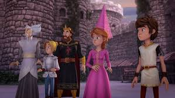

Alors que l’armée de Canlot se prépare à la bataille finale, des signes étranges apparaissent : des messages secrets, des provisions empoisonnées, et des visions troublantes dans le miroir d’argent de Quelliève.
Merlin révèle qu’un traître parmi les Enfants de la Table Ronde sert le roi Maux en secret.
Arthur décide d’organiser une épreuve de loyauté : chaque chevalier doit traverser le Labyrinthe des Miroirs, où seul un cœur pur pourra en sortir.
Un à un, les chevaliers reviennent… sauf un. Quand vient le tour de Gawain, le plus fidèle ami d’Arthur, les miroirs se brisent dans un éclair aveuglant.
Le silence tombe. Gawain sort… les mains vides, le regard fuyant.
Est-ce lui le traître ? Ou le roi Maux a-t-il semé la discorde dans leurs cœurs ?
La vérité sera révélée dans l’Épisode 6… si Arthur y survit.